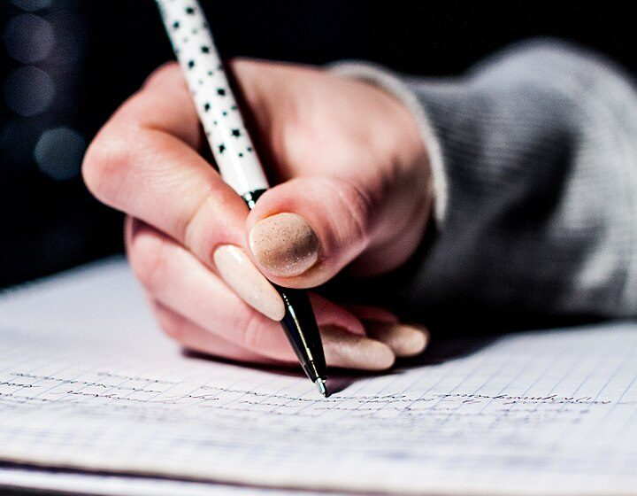

工具
- 笔：0.5mm 中性笔即可，出墨顺滑、笔杆稍粗的更不累手。别用太细太滑的圆珠笔。
- 纸：中文用田字格或米字格本；英文用四线格本。纸下垫几张纸或软垫，笔画才有弹性。
- 字帖：选一本规范楷书硬笔字帖，一本练到底，不要频繁换。
字写不好不是天赋问题，而是没人告诉你先练什么、后练什么、怎么才算练对。这里把中文和英文各拆成 7 个阶段，每天 30 分钟，照着每日任务表走就行。
这六条比任何字帖都重要。练了很久没进步，几乎都是违反了其中一条。
练字时的速度应是平时的三分之一。写快了，手只会重复旧习惯。
一天精练 5–8 个字，胜过抄 500 个字。每个字写 5–8 遍就够。
下笔前先“读帖”：起笔在格子哪里？多长？多斜？看清了再写。
每写一遍就和范字比，找出最不像的一处，下一遍只改这一处。
每天 30 分钟比周末突击 3 小时有效得多，肌肉记忆靠频率。
第一天抄一段话存起来，之后每周同一段再抄一次。进步看得见才坚持得住。

选择一条路线。完成一个阶段就打勾，进度会保存在本机浏览器里。
汉字按部件的摆放方式分成八类。每一类都有固定的比例规律，记住规律，没练过的字也能写对。色块示意各部件大致占多大位置，点例字可以看笔顺并跟写。
不分结构、写任何字都用得上。每次练字挑一条，专门盯着它写。
每天一次，标准时长 30 分钟。一周练 6 天新内容，第 7 天复习。每一天都写明热身、任务、应用三段做什么，以及当天要打印哪一张练习纸。做完打勾，进度保存在本机浏览器。
当周指定的控笔线条。把手放松、把速度降下来。
下表里的内容。练字时每个字：读帖 → 写 → 对比 → 改一处 → 再写，5–8 遍。
用当天练的字或笔画抄一句话（10–20 字），不看范字，写完再对照。
带示范、描红和空格的练习纸。点“打印”后，在打印对话框里选打印机，或选“存储为 PDF”保存下来。
输入任意汉字，看标准笔顺动画，再用鼠标或手指跟写一遍。
输入要练的字，生成带范字和描红的格子，可直接打印。
每行文字会生成一行描红，后面跟空白行自己写。